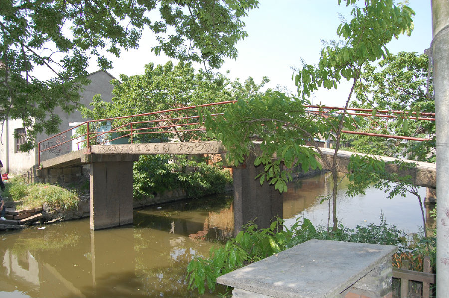

嘉兴市文物保护网 · 市级文物保护点 · 2020-11-09 · 原文

七星村万兴桥位于嘉兴市南湖区七星镇七星村栅口自然村，俗称“铁店桥”。南北横跨桥埭港，据形制和周边村民介绍，判断为清至民国时修建，全长20.99米，宽2.1米，桥面和桥柱均由三块石板组成，桥底距水面2.7米。南北落坡各设石阶8级和6级。东西两侧刻有“重建万兴桥”额，下有桥联（但模糊无法辨识），桥身刻有卷草等纹饰。万兴桥体量较大，做工精美，保存较好，是当地仅有的古建筑之一，具有较高的历史和艺术价值。2010年公布为嘉兴市文物保护点。